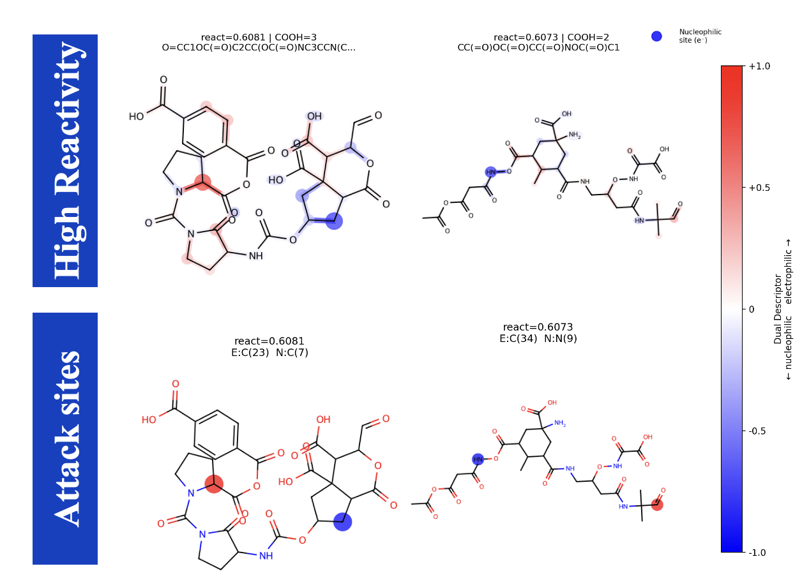

5Publications
7Research Topics
3Research Labs
8Awards

status
Active PhD Researcher · Year 2
supervisor
Prof. Manabu Fujii · Institute of Science Tokyo
institution
Institute of Science Tokyo (IST) — Ookayama Campus
currently
CRAM-GTransformer: Bidirectional Graph Transformer for Site-Specific and Pathway-Level CRAM Biotransformation
funding
AISpread1000 (PI: Prof. Fujii) · ¥5M · Million-scale diverse-DOM generation
open_to
Collaborations · Internships · Conference Talks
Current Work
CRAM-GTransformer
Property-conditioned deep learning for carboxyl-rich aliphatic/alicyclic molecules (CRAM) and site-specific, pathway-level DOM biotransformation.
View CRAM project →GSAT Model
Graph–Sequence Attention Transformer for multigenerational ecotoxicity prediction — R² = 0.907 on LC50 benchmarks.
View GSAT model →Research Gallery
toxicity_model.bmp
 GSAT_architecture.bmp
cram_overview.bmp
GSAT_architecture.bmp
cram_overview.bmp
 transformation.bmp
reactivity.bmp
DS_AI_certificate.bmp
transformation.bmp
reactivity.bmp
DS_AI_certificate.bmp
 bioinformatics.bmp
hpc_cluster.bmp
bioinformatics.bmp
hpc_cluster.bmp

8 object(s)My Research
Research Areas
⬡ Bioinformatics
Protein & Enzyme Discovery
Large-scale computational discovery of marine enzymes using protein language models, deep clustering, and structural analysis.
Explore →
⬡ Chemoinformatics
Chemical Space & Molecular AI
Generative models and graph neural networks for molecular formula assignment, toxicity prediction, and chemical space exploration.
Explore →
⬡ Environmental Science
DOM & Marine Carbon
Decoding dissolved organic matter complexity in aquatic environments using HR-MS/MS and kinetic deep learning models.
Explore →
⬡ Machine Learning
GNN & Physics-Informed Models
Graph Transformers, PINNs, and VAE architectures applied to environmental fate modeling, biotransformation, and drug discovery.
Explore →Recent Publications
See all →
Structural and Kinetic Analysis of Carboxyl-Metabolizing Enzymes…
ChemRxiv (Preprint) · First AuthorTalks & Recognition
View all →Top Presenter — LLNL Summer Case Competition
Structure-Aware Genetic Algorithm · JST × Lawrence Livermore National Laboratory
Kyoto University · Amgen Symposium
Cheminformatics & ML for molecular discovery and environmental fate
Intel International Science and Engineering Fair
Finalist presentation · Phoenix, Arizona